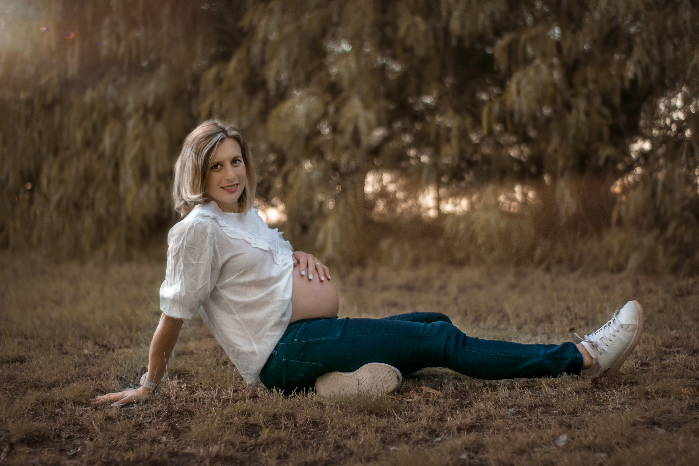
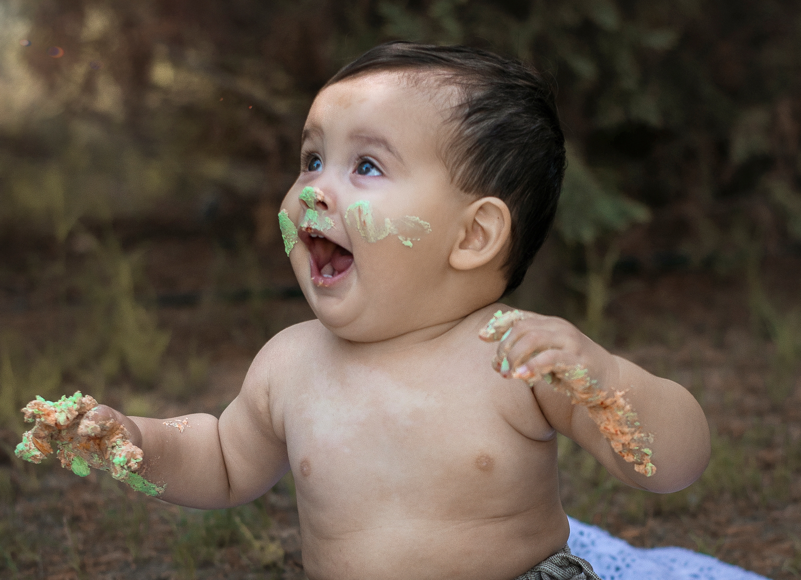
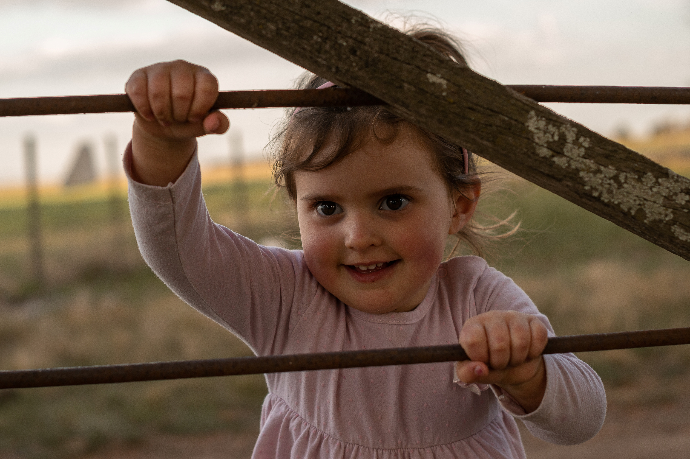

Maternidad
Un vínculo natural, sagrado y emotivo entre la mujer y su bebé, dentro o fuera del vientre.
Estas sesiones son muy personales, sin mucho accesorio, solo mamá y bebé.
Se pueden realizar entre las 28 semanas hasta los 8 meses de nacido su bebé.

Bebes
Primeras sonrisas que derriten el corazón.
Los bebés sobre los 3 o 6 meses en el mundo comienzan a mostrar una sonrisa sin dientes que
enamora!
Estas sesiones se realizan entre los 4 a 9 meses y son de lo mas tiernas.

Infantiles
Retratar la forma inocente de ver el mundo.
En estas sesiones capturaré sus juegos, sus movimientos, habilidades nuevas y esas expresiones
que
hacen
único a cada uno.
Estas sesiones se pueden realizar desde los 9 meses hasta los 9 años.
